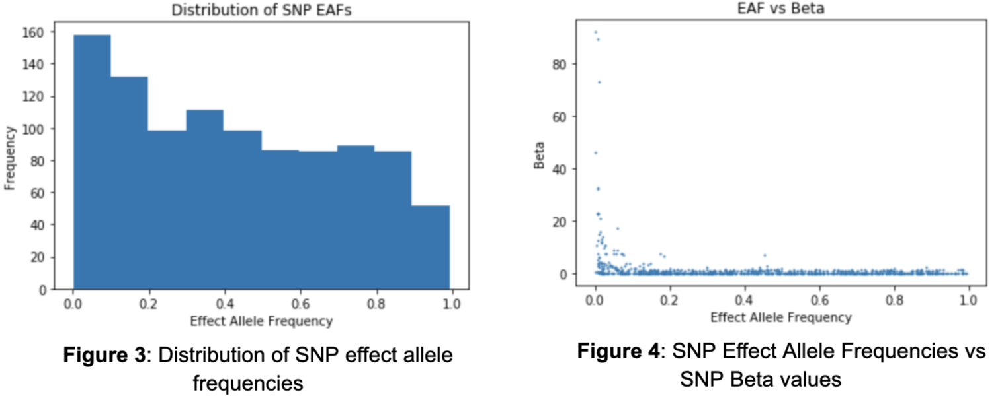

Predicting Disease Risk
Through Machine Learning
An exploration into the viability of machine learning in disease risk prediction.
Authored By: Enrique Sanchez, Allston Fojas, Michael Sorenson
An exploration into the viability of machine learning in disease risk prediction.
Authored By: Enrique Sanchez, Allston Fojas, Michael Sorenson

Source code and detailed Jupyter notebooks for this project can be accessed here.
Traditional epidemiology techniques, most notably polygenic risk scoring, have been used by researchers and well-known companies, such as Takeda, MiCom Labs, and 23andMe, to calculate the disease risk of patients and consumers. However, recent research has shown limitations in polygenic risk scoring due to its inability to model high dimensional data with complex interactions (Wai, 2019). As humans, millions of potentially disease-contributing genetic variants exist in the genome, so the inability to leverage such information limits the power of polygenic risk scoring to accurately determine the disease risk of individuals. In this report, the viability of machine learning in disease risk prediction for Coronary Artery Disease, Alzheimer’s, and Diabetes Mellitus is explored. It is shown how machine learning models, including Support Vector Machines (SVMs), Logistic Regression, K Nearest Neighbors, Decision Trees, Random Forest, and Gaussian Naive Bayes, compare in their ability to effectively predict disease risk and how they may offer alternate and possibly better methods over traditional techniques.
Genetic studies have enabled researchers and medical practitioners to better understand the underlying relationships between genes and human traits (Tian, 2019). However, these traits extend to well beyond those that are not so easily seen or determined, such as disease. This relationship between genes and diseases has been investigated through Genome Wide Association Studies (GWASs), which analyze the entire human genome to find genetic variants associated with specific traits and diseases (“Genome-Wide Association Studies,” n.d.).
The genetic variants that are commonly investigated are Single Nucleotide Polymorphisms (SNPs), which are the most common form of genetic variation in the human genome. A SNP represents a single nucleotide difference in the genome. To clarify, the DNA is composed of four nucleotide bases: Thymine, Cytosine, Adenine, and Guanine. If more than 1% of the population does not have the same nucleotide at a specific position in the genome, this is then considered a SNP (“SNP,” n.d.). However, a particular SNP does not necessarily contribute towards the development of a particular disease. This is precisely the reason why GWASs are so powerful; they investigate and uncover the variants that do indeed contribute towards disease.
After compiling results from GWASs, researchers are able to estimate the potential risk an individual has in developing a particular disease. A common method of calculating such risk is through polygenic risk scoring, which weighs SNPs according to their importance in the development of a disease and sums each risk score together. However, recent research has shown that polygenic risk scores cannot effectively model high dimensional data (Wai, 2019). Given that many SNPs can contribute towards a disease, this shortcoming becomes an issue. To address this issue, this project sets out to explore the viability of machine learning in disease risk prediction, by testing the following machine learning models on genetic data: Support Vector Machines, K Nearest Neighbors, Logistic Regression, Decision Trees, Random Forest, and Gaussian Naive Bayes.
In exploring these models across different diseases, this project aims to answer the following two research questions:
1. How do machine learning techniques perform in predicting disease risk and how do they compare?
2. How does performance vary across different diseases?
The methods shown here are by no means groundbreaking in their novelty, but should provide more context in how different performance metrics other than accuracy can be used to measure the success of different models. Previous research has uncovered promising results in using machine learning techniques for disease risk prediction; Support Vector Machines are especially popular, due to the algorithm’s predictive power on genetic data, and ability to handle high dimensional information (Uddin, 2019). However, much of this previous research uses accuracy alone as the only metric by which to compare different models. The results of this project suggest that Gaussian Naive Bayes and Support Vector Machines perform the best in terms of accuracy, precision, and recall. An important consideration in assessing the different models is that accuracy alone is not enough for determining which models are best. In solving a task like disease risk prediction, where those who actually have a disease will always be the minority, using accuracy as the only metric biases one towards thinking that a model predicting “all individuals are disease-free” is sufficient, because the majority of the individuals will, in fact, be disease-free.
In order to address the shortcomings of analyzing accuracy alone, this project focuses on analyzing precision and recall, because recall captures important aspects of model performance when considering disease risk prediction that accuracy alone does not address. The performance of models varied across diseases, and such variance is likely explained by the number of SNPs found to be contributing towards each disease (i.e. if a disease has more SNPs to use for simulation, there will be less variance if the data are simulated a second time).
For each of the diseases that will be explored, the GWAS Catalog provides summary statistics on the most relevant SNPs to the development of each disease. From these statistics, this project will attempt to simulate individual-level data, and use this data to create predictive models using the SNPs that are found to be relevant by the respective GWAS. These models are built on SNPs and will be trained to distinguish between three different risk classes (low risk, medium risk, high risk) for each disease.
In order to simulate the data, the variant ID (SNP identifier), beta value (weight), and the corresponding effect allele frequency of SNPs will be used. More detail can be found in the Population Simulation section below, but the simulation for each disease will be built using two Genome Wide Association Studies. One of these GWASs will be used for simulating a population used for training and the other for model building (and testing).
To solve the lack of individual-level SNP data, the summary statistics publicly available on the GWAS catalog were used to simulate individual-level SNP data, using the effect allele frequencies of each SNP to create individuals with a realistic distribution of SNPs. The simulation process requires the collection of two sets of GWAS data sets for each disease; one data set is used for simulating the individual-level SNP data, and the other is used for model building. Information from the first GWAS will be used to generate a synthetic population and assign different risk classes. The second GWAS will then be relied upon to mimic real data collection—using only the SNPs found in the second GWAS for model building mirrors how real data collection on a specific trait only results in finding a subset of all the things that explain that trait.
The first step into simulating the data is identifying the relevant SNPs (variant ID) and their contribution to a particular disease (beta score). The next step is identifying the risk allele frequencies for the SNPs. This allows us to know the frequency of a SNP in the general population.
The first step in simulating the data is identifying the relevant SNPs (variant ID) and their contribution to a particular disease (beta score). The next step is identifying the effect allele frequencies for the SNPs, which describes the frequency of a SNP in the general population. This information is available in the acquired GWAS data set. A total of 1,000 individuals were simulated for each disease. In the simulated dataset, each individual was assigned an allele at each SNP position according to that SNP’s effect allele frequency in the population. For example, if the effect allele frequency of a SNP is 10%, every individual would have a 10% chance of having that SNP. This is done for every SNP in the data set and repeated for all 1,000 individuals. In the end, the frequency of the SNPs in the data set closely reflect that of the initial effect allele frequencies. From there, a polygenic risk score (PRS) was assigned to each individual by taking the dot product of the beta scores and the binary SNP values. This can be described by the following formula:
Where βj is the beta score (weight) for the jth SNP, SNPij is a binary value representing whether the ith
individual has the jth SNP.
The formula is followed from https://sahirbhatnagar.com/blog/2017/08/11/polygenic-risks-scores-with-data.table-in-r/.
Disease risk was then assigned to each simulated individual by including a ‘bias’ step into the above simulation pipeline. In order to apply such a bias, determining what proportion of the data set should be at different risk levels and how much they should be biased by was necessary. Given that general disease trends follow a distribution where the majority of individuals are at low risk, a smaller portion are at medium risk, and the smallest portion are at high risk, the assignment of these classes was 60%, 30%, and 10%, respectively. In order to apply bias to each of these classes of the data set, the SNPs’ effect allele frequencies of those at low risk will be scaled according to a sampled factor in the set of numbers between 0.1-0.5, those at medium risk will be scaled according to a sampled factor in the set of numbers between 0.5-0.75, and those at high risk will be scaled according to a sampled factor in the set of numbers between 0.75-1.0. This method creates individuals with different numbers of SNPs, and those with less SNPs are considered “low risk,” while those with the most SNPs are considered “high risk”.
This simulation process is applied to each disease: for each disease a GWAS study that contains relevant SNPs and effect allele frequencies is used to build a large dataset where each row is an individual, and each column is a SNP. Then, entry(i, j) is a binary value that says whether individual i has SNP j. An example of the structure of the simulated data is shown in Table 1 below.
The data set consists of 10,000 individuals, with each individual represented as one row in the data set. There are a total of 996 columns, from which 994 are individual SNPs and the remaining two are the polygenic risk score and class label columns. Each of the SNP columns contains binary values (0 and 1) representing whether an individual has the effect allele. The polygenic risk score column consists of floats and the class label column consists of three integers, each of which represents a class. Given the method of simulating, the data consists of roughly 60% low risk, 30% medium risk, and 10% high risk individuals. The distribution of polygenic risk scores as a whole has a right skew (Figure 1) and the same persists when looking at the distributions at a class level. Due to the process of giving low risk individuals less risk SNPs and high risk individuals more risk SNPs, there is a clear difference in the distribution of polygenic risk scores across the different classes (Figure 2).
It is also important to evaluate the effect allele frequencies (EAFs) of the SNPs as they directly influence the likelihood of an individual having a SNP and ultimately the polygenic risk score. There is no clear shape in the distribution of effect allele frequencies as there exists much variability (Figure 3). The smallest effect allele frequency is .0002 and the largest is .993. Intuitively, one may assume that there exists a relationship between the effect allele frequency of a SNP and their contribution in developing Coronary Artery Disease. In other words, the smaller the frequency of a SNP, the larger its influence. Although the majority of the SNPs contribute a minimal amount regardless of frequency, those that are the most influential do tend towards lower effect allele frequencies (Figure 4).

As for the model, it will only consider SNPs that were found to be associated with Coronary Artery Disease in both acquired GWAS data sets. The first GWAS used to create the simulated data contains 915 SNPs, of which 672 are in the second GWAS. Therefore, the model will train on 672 of 994, or 68%, of the SNPs in the GWAS used to generate the data. The reasoning for doing this is that using a second GWAS and filtering the simulated dataset to only contains SNPs in the second GWAS is like gathering data in the real world; while a disease may actually have 1500 SNPs contributing towards it, a GWAS may only find 900 of those SNPs as being significant. In this simulation, the first GWAS is thought of as what is true, while the second GWAS is used to mimic data collection. Using this subset of features, the model will attempt to classify each individual into their respective class.
After the data was filtered through the process above, it was then ready for model building; models tested in this project included Support Vector Machines, Gaussian Naive Bayes, Logistic Regression, K Nearest Neighbors, Random Forest, and Decision Trees. Model parameters were then tuned to maximize performance.
For each model, the following parameters were considered:
Support Vector Machine:
tol - the tolerance for stopping criterion
C - the regularization parameter
Gaussian Naive Bayes:
var_smoothing - largest variance of every feature that is added
Logistic Regression:
C - the inverse of regularization strength similar to Support Vector Machines
tol - the tolerance for stopping criteria.
K Nearest Neighbors:
n_neighbors - the number of neighbors
p - the specific distance calculation between Manhattan, Euclidean, and Minkowski distance.
Random Forest:
n_estimators - the number of decision trees in the forest
Decision Tree:
class_weight - the weight of each class label
After performing grid search cross validation on each model, the following are the optimal sets of parameters for each model:
Support Vector Machine:
C: 10, tol: 0.1
Gaussian Naive Bayes:
var_smoothing: 0.1
Logistic Regression:
C: 10, tol: 0.1
K Nearest Neighbors:
n_neighbors: 1, p: 3
Random Forest:
n_estimators: 200
Decision Tree:
class_weight: null
First, a table for each disease that shows accuracy by class was produced, in order to understand how each model performs in terms of accuracy for low risk, medium risk, and high risk. Additionally, the overall accuracies of each model for each disease can be seen in Table 2 below. From the accuracies alone, it seems the Gaussian Naive Bayes and the Support Vector Machine models are the clear winners. Another thing to notice is that in all of these diseases, Logistic Regression and Random Forest Classifiers also perform decently. However, the data are distributed so that most of the population are low risk individuals, so a model could have high accuracy but perform poorly on higher risk individuals.
Additionally, the accuracies only reflect one instance of the model, they do not show how the model changes when using different thresholds for classifying each class. To address the lack of information gained by analyzing accuracy alone, P-R curves were produced in order to show how different thresholds can change each model’s performance. For context, a P-R curve is a plot of the precision (y-axis) and the recall (x-axis) for different thresholds. Essentially, for a P-R curve, as the curve moves higher up and to the right, the better the model performs for a particular class since both precision and recall are maximized across various thresholds. In addition to maximizing these curves, recall for the high risk class should be maximized, because high recall means less false negatives. In the high risk class, a false negative would mean that someone who is actually at high risk is being classified as not at high risk, which is the worst mistake a model could make for disease risk prediction. Below are tables for each disease showing accuracies split by class, followed by P-R curves for each model. Each model is split by class, with low risk in green, medium risk in orange, and high risk in red.
Coronary Artery Disease
Table 3 describes the accuracies broken down by class. In other words, for each individual who is actually low risk, the column labeled “Low Risk” contains the proportion of individuals in the test set that are correctly labeled as low risk by the model in question. The same is true for the “Medium Risk” and “High Risk” columns. By focusing on the accuracy in the high risk class, it is clear that Logistic Regression and the Random Forest Classifier perform poorly in the high risk case. K Nearest Neighbors and Decision Trees also don’t do great on the high risk class, while Support Vector Machine and Gaussian Naive Bayes do the best on the high risk class, and have the most balanced accuracies over all classes in general. However, these accuracies are for a single parameterization of these models, it may be possible to improve each model using the high risk accuracy to get more balanced results (they were optimized on overall accuracy, which favors accuracy for the low risk class, due to the fact that low risk individuals make up ~60% of the dataset).
From Figure 5, it is clear that Decision Trees and K Nearest Neighbors do not have great P-R curves, as their area values are relatively low, especially for the high risk class. Note that the math behind a Logistic Regression model is very similar to the math behind how polygenic risk scores are calculated — both methods calculate weights for the classes, then in each individual their risk score is the sum of all the weights of the features that they have. From Figure 5, Logistic Regression has a lower value for area for the high risk class than the other three models. This suggests that the other three machine learning models may be better fit to understand the complexities of genetics and its contribution towards disease. Between the other three models, it seems Support Vector Machines performs the best in terms of precision and recall for the high risk class, but it is closely followed by Gaussian Naive Bayes and the Random Forest Classifier.
Alzheimer's Disease
From Table 4, by focusing on the accuracy in the high risk class, the Random Forest Classifier and Decision Tree Classifier seem to perform the worst. The Logistic Regression and Support Vector Machine models perform equally well on high risk, but the SVM does slightly better than the Logistic Regression on the medium risk class. K nearest neighbors and Gaussian Naive Bayes do the best on the high risk class, although KNN performs very poorly on the medium risk class. Once again, though, these accuracies are for a single parameterization of these models, so P-R curves are a better way to show how the models perform for different thresholds.
From the P-R curves in Figure 6, similar to Figure 5 (Coronary Artery Disease P-R curves), it is once again clear that the Decision Trees and K Nearest Neighbors perform poorly in terms of precision and recall for the high risk class. For Alzheimer’s Disease, Logistic Regression actually performs pretty well on the high risk class, but performs much worse on the medium risk class than any other model. The Random Forest Classifier, Support Vector Machine, and Gaussian Naive Bayes models performed most consistently across the three classes, with the Random Forest Classifier and SVM doing best on the high risk. Between those two, the SVM seems to be the best because it has better accuracy and does slightly better on the medium and low risk classes in precision and recall.
Diabetes Mellitus

From Table 5, by focusing on the accuracy in the high risk class, the Random Forest Classifier and Decision Tree Classifier are once again the two worst models. The Logistic Regression is actually the best model in terms of accuracy for the high risk class, outperforming the Gaussian Naive Bayes and Support Vector Machine models by a large margin. The KNN, SVM, and GNB models all have equal accuracy on the high risk class, although KNN has poor accuracy on the medium risk class. In deciding between the Logistic Regression, Support Vector Machine and Gaussian Naive Bayes models, it is crucial to also consider how recall changes as the model thresholds change.
From Figure 7, we can see again that the Decision Tree and K Nearest Neighbors are unfavorable compared to the other models for precision and recall. Interestingly, Logistic Regression is not as good as SVM, GNB, and RFC models for precision and recall in the high risk class, though it outperformed those three in accuracy. From the other three models, it seems that GNB has the best P-R curve for the high risk class, but it is closely followed by the RFC and SVM models.
By looking at these three diseases, a different model performed the best in terms of precision and recall. In terms of accuracy on the high risk class, Gaussian Naive Bayes was the best for both Coronary Artery Disease and Alzheimer’s Disease, although Logistic Regression won out over the Gaussian Naive Bayes model for classifying Diabetes Mellitus. Though the results vary across disease, it is clear that Gaussian Naive Bayes and Support Vector Machine could very likely be better models for disease risk prediction than Logistic Regression. Using Logistic Regression as a proxy for polygenic risk scores (since, as stated before, they use almost the exact same algorithm), it is quite likely that polygenic risk scores are not the best way to predict disease on the individual level.
In conclusion, to analyze machine learning techniques for disease risk prediction, various machine learning models were tested against Logistic Regression, which is used as a proxy for traditional techniques. By analyzing accuracy and recall on the high risk class, it is clear that various machine learning models are more viable than polygenic risk scoring for disease risk prediction. Moreover, considerations such as environmental factors and lifestyle choices were not accounted for and could be used to further improve a machine learning model, but they could not be incorporated into a polygenic risk score.
One other important thing to think about is how these results are biased towards the simulation process. Looking back at how the data are simulated may explain why some models do better than others. However, changing the factors giving high risk individuals more of the risk SNPs and low risk individuals less of the risk SNPs did not change the overall performance of the different models significantly—Gaussian Naive Bayes and Support Vector Machines remained as the best models.
Future Work
Though multiple methods of simulating the data were tested—each of which produced similar results—there may be some other factor that the simulation process does not account for. The best way to solve simulation bias would be to get real data. In the future, a real dataset containing fully sequenced individuals with each individual labeled for having a disease or not having a disease could be tested with various models the same way the simulated data are tested, in order to understand more realistically how different models perform on different diseases, and how they vary.
1. Bhatnagar, Sahir Rai. “Polygenic Risks Scores with Data.table in R.” Sahir's Blog, 11 Aug. 2017, sahirbhatnagar.com/blog/2017/08/11/polygenic-risks-scores-with-data.table-in-r/.
2. Cáceres, J. J., & Paccanaro, A. (2019, July 5). Disease gene prediction for molecularly uncharacterized diseases. Retrieved from https://www.ncbi.nlm.nih.gov/pmc/articles/PMC6636748/
3. Genome-Wide Association Studies (GWAS). (n.d.). Retrieved from https://www.genome.gov/genetics-glossary/Genome-Wide-Association-Studies
4. Keane, T., & Wtsi. (n.d.). Retrieved from https://www.uk10k.org/data_access.html
5. Koehrsen, Will. “Beyond Accuracy: Precision and Recall.” Medium, Towards Data Science, 10 Mar. 2018, towardsdatascience.com/beyond-accuracy-precision-and-recall-3da06bea9f6c.
6. “Polygenic Risk Scores.” Genome.gov, www.genome.gov/Health/Genomics-and-Medicine/Polygenic-risk-scores.
7. Schrodi, S. J., Mukherjee, S., Shan, Y., Tromp, G., Sninsky, J. J., Callear, A. P., … Weeks, D. E. (2014, June 2). Genetic-based prediction of disease traits: prediction is very difficult, especially about the future. Retrieved from https://www.ncbi.nlm.nih.gov/pmc/articles/PMC4040440/
8. Sci-kit learn: Machine learning in Python. (2020). Retrieved June 02, 2020, from https://scikit-learn.org/stable/
9. SNP. (n.d.). Retrieved May 17, 2020, from https://www.nature.com/scitable/definition/snp-295/
10. Tian, Dongmei, Wang, Pei, Tang, Teng, … Zhang. (2019, September 30). GWAS Atlas: a curated resource of genome-wide variant-trait associations in plants and animals. Retrieved from https://academic.oup.com/nar/article/48/D1/D927/5576118
11. Uddin, S. (2019, December 21). Comparing different supervised machine learning algorithms for disease prediction. Retrieved May 17, 2020, from https://bmcmedinformdecismak.biomedcentral.com/articles/10.1186/s12911-019-1004-8
12. Wai, D. S., William, Melissa, Richard, O’Sullivan, & Justin. (2019, March 11). Machine Learning SNP Based Prediction for Precision Medicine. Retrieved May 17, 2020, from https://www.frontiersin.org/articles/10.3389/fgene.2019.00267/full
13. Wray, N. R., Yang, J., Hayes, B. J., Price, A. L., Goddard, M. E., & Visscher, P. M. (2013, July). Pitfalls of predicting complex traits from SNPs. Retrieved from https://www.ncbi.nlm.nih.gov/pmc/articles/PMC4096801/